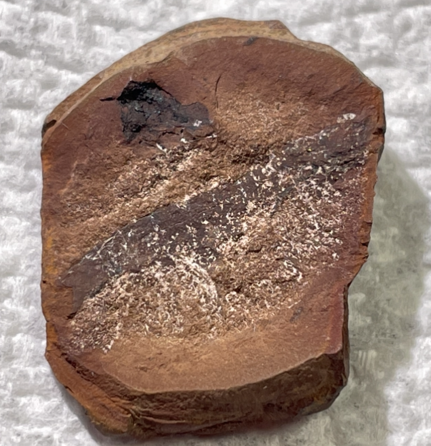
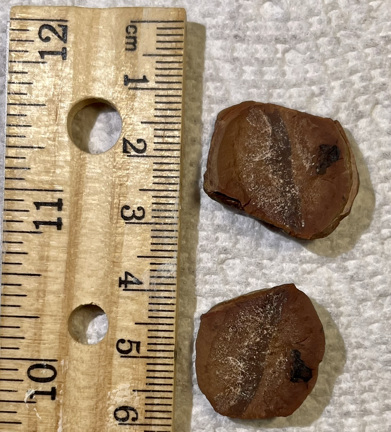
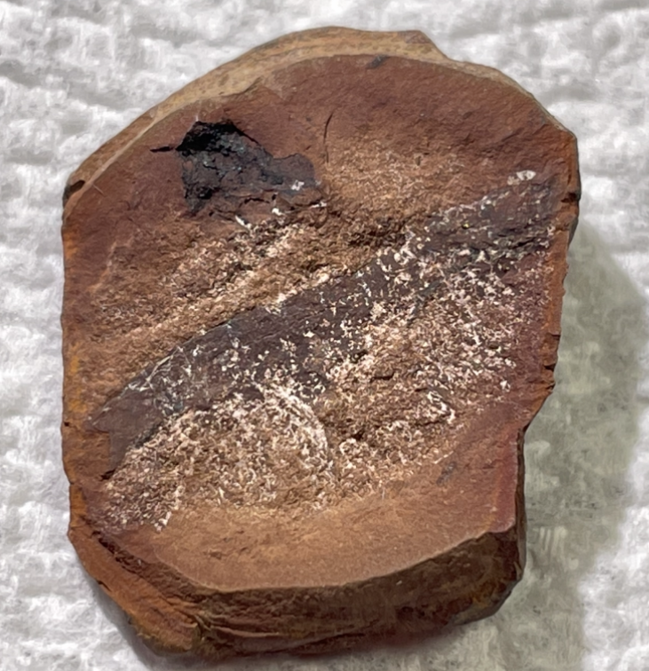
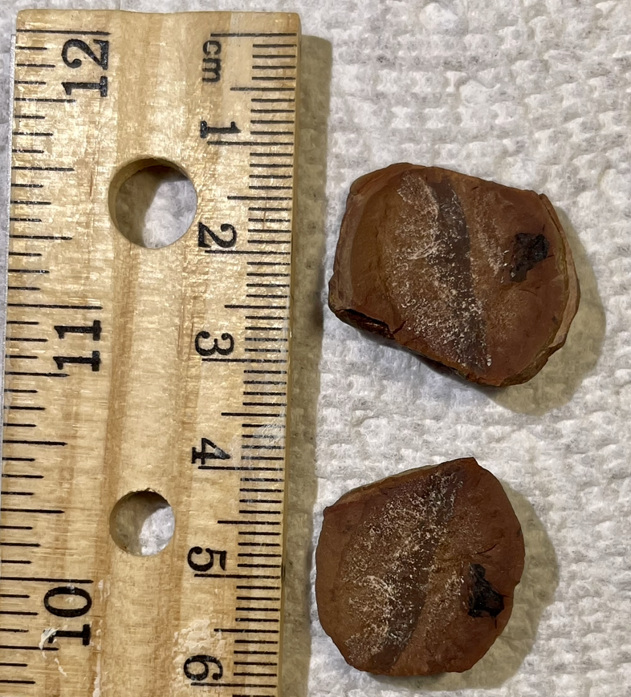

Arthropod
Indet. Millipede
• Pennsylvanian
•
• Crock Hey Open Cast, Wigan, Lancashire, UK
Size:
PRICE: $90
A rare split-pair millipede nodule from the UK, which may be prepped-out further. I believe this locality is no longer accessible.
 
